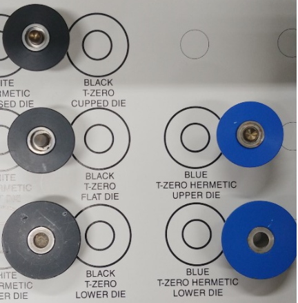
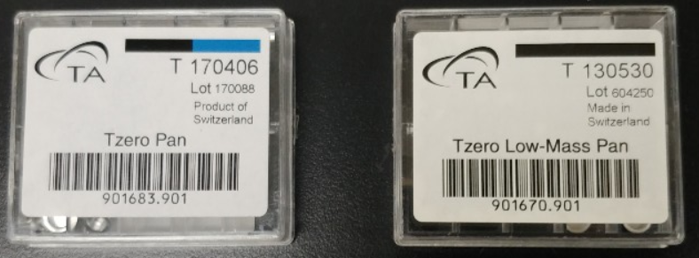
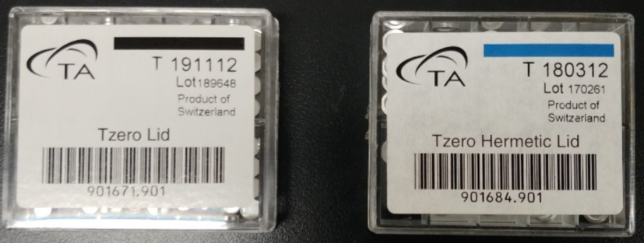
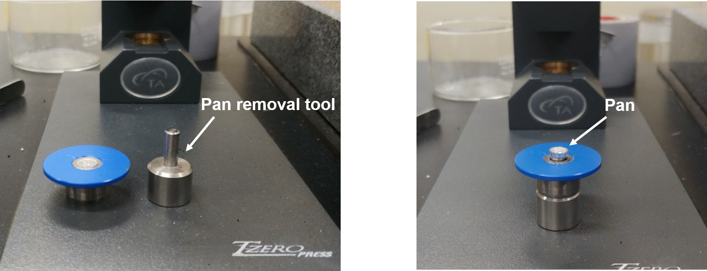

- Calibration
- Cleaning
- Sample preparation
- Characterize Tg
- Export Data
- Errors and issues
Sample preparation
Choice of Pan & Lid
Selection of the appropriate DSC sample pan and lid is a very important element of your method development process. The results you obtain from the use of DSC will be affected by your choices. All pans and lids are made of aluminum.
Die

There are two sets of dies with black or blue color. All pan & lid packages are labeled with a black or blue stripe that gives information to use which set of die.
We have two types of black upper die, one is flat and the other concave. The flat die is typically the first choice so that the sample-to-pan and sample-to-lid contact can be maximized. However, use of the concave die may be advantageous for irregularly shaped samples, as the lid will tend to conform to the sample better.
Pan

We have two types of pan, Tzero Pan and Tzero Low-Mass Pan. Tzero Pan is labeled a black/blue stripe that can use with both dies. It is the general choice to run DSC.
Whether Tzero Low-Mass Pan is labeled solid black stripes, respectively. While it is intended for small size samples, a thin aluminum pan gives an improvement of the sensitivity, resolution of the heat flow measurement.
Lid

Tzero Lid is the general choice for solid samples. The liquid, viscous and decomposable samples are preferred to use with Hermetic Lid with its sealing system. The pressure seal formed will typically hold 2-3 atmospheres of internal pressure.

Note: If you use blue dies with hermetic system, you can easily pick up the pan with a removal tool on the front of the press as shown in the figure.
Preparation of liquid like samples
스페츌라나 disposable pipette으로 pan벽면에 샘플 묻을 가능성이 높아 hermetic lid를 쓰는것을 권장.
Lid with a hole
Temperature Range
먼저 TGA를 통해 sample의 decomposition temperature를 측정하고 3% 이내 온도범위 측정.
찍고싶은 픽의 범위에서 2~3분 동안 baseline을 앞뒤에 위치시킬것. 그래야 제대로 분석이 가능함℃